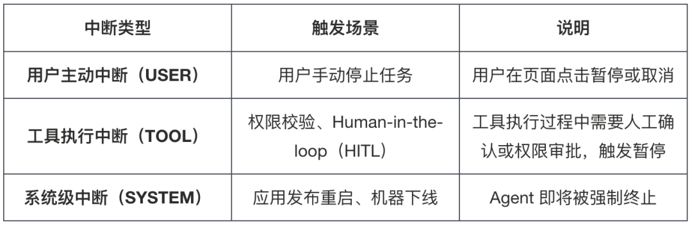
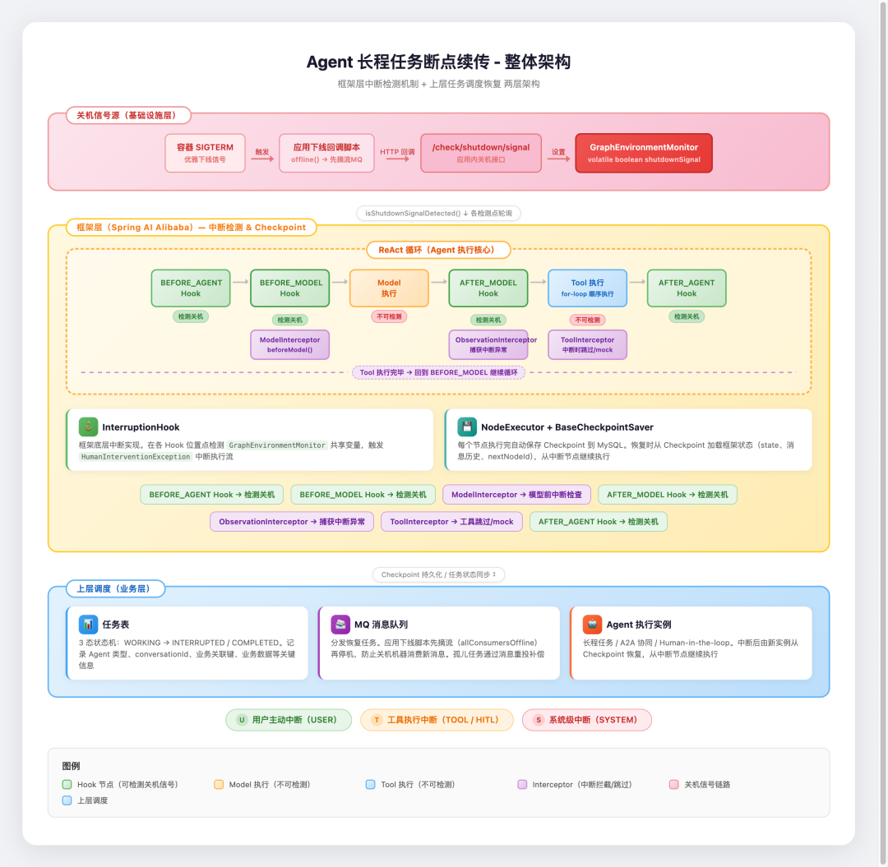
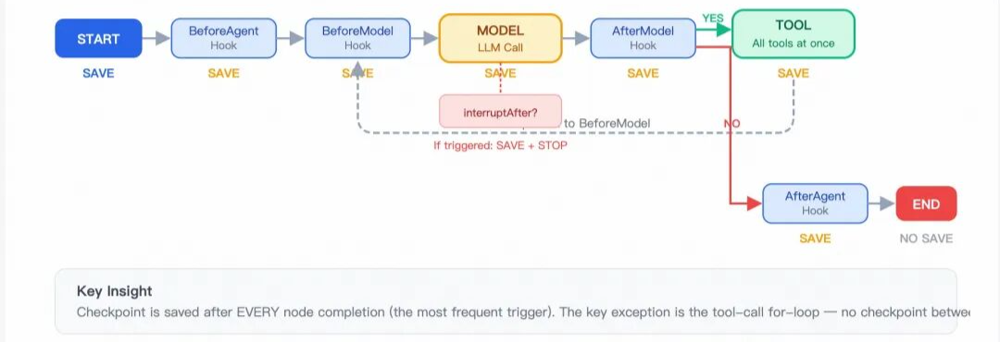
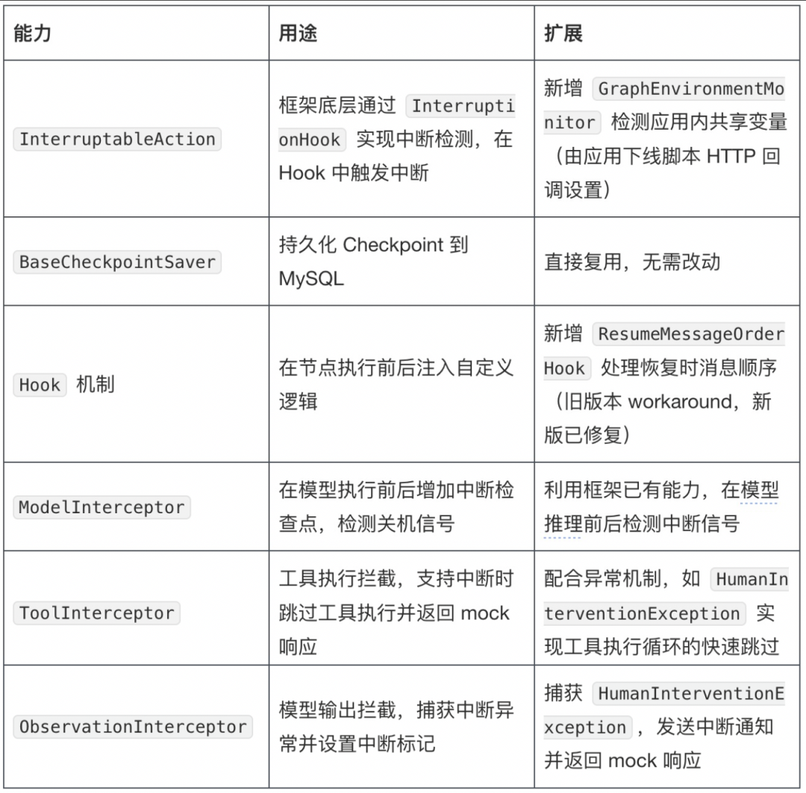
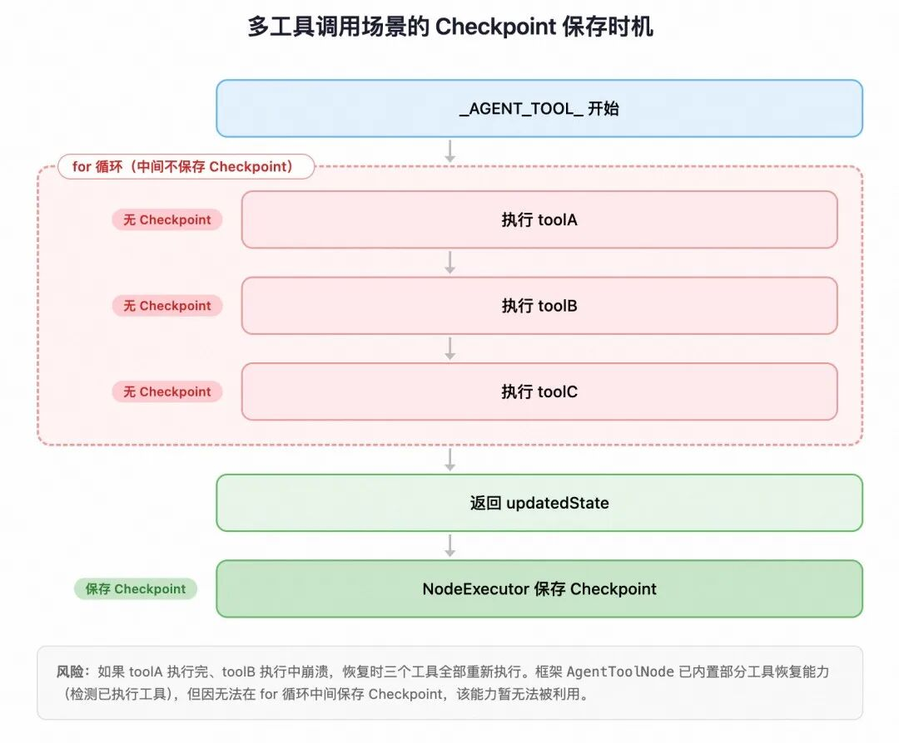
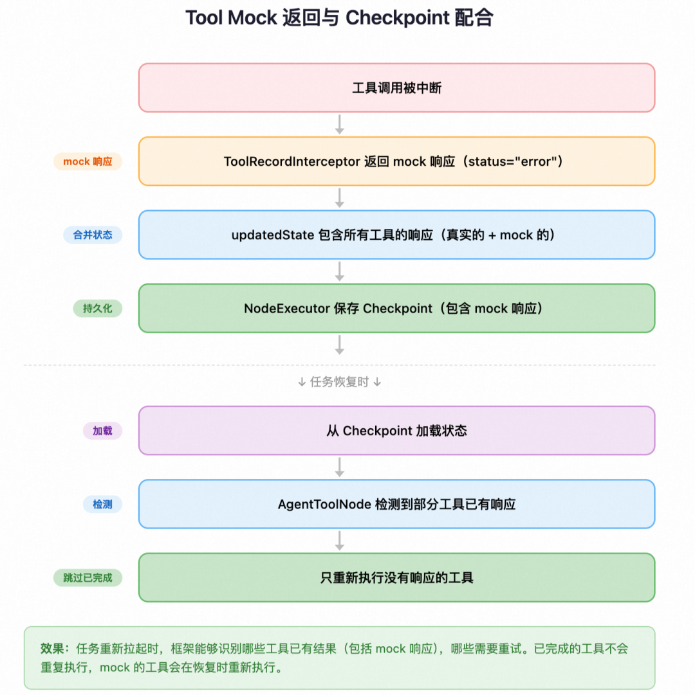
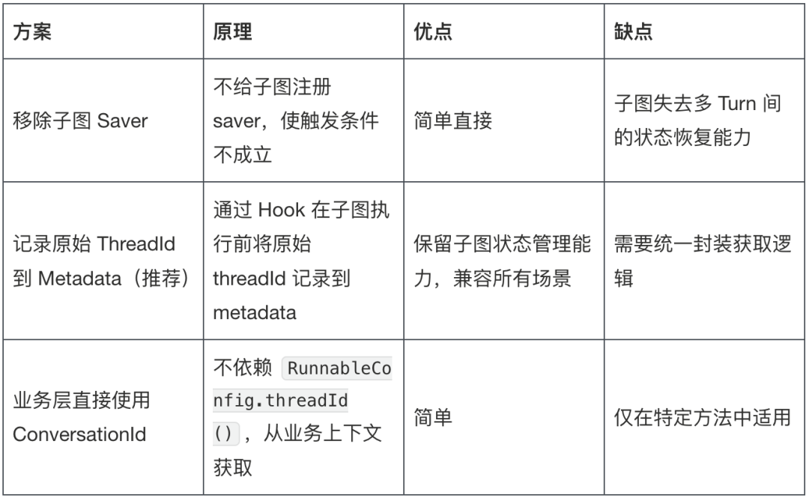
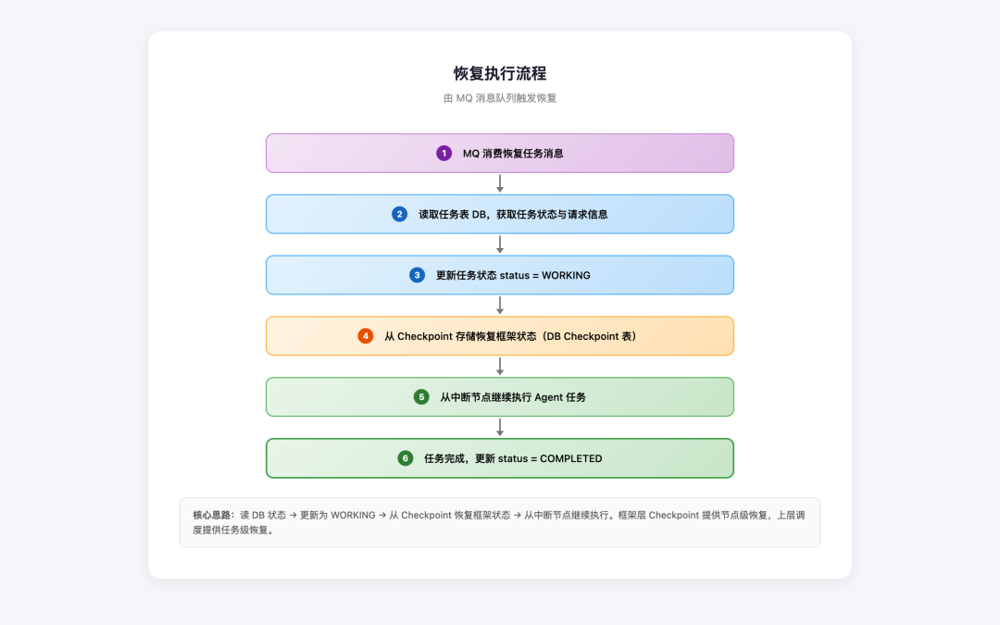

Agent 长程任务断点续传：从框架 Checkpoint 到跨进程恢复的完整实践
来源：微信公众号 归档日期：2026-09-10 抓取状态：成功 原文字符：12637｜配图：10 张
摘要速览
- 生产环境 Agent 中断分三类：用户主动中断、工具执行中断（协作式，Hook 拦截保存 Checkpoint）、系统级中断（非协作式，需上层调度 + MQ 协调恢复）
- 两层恢复架构：框架层 Checkpoint 覆盖单任务，调度层用任务表 + 消息队列协调跨进程恢复
- 覆盖场景：人机协作（等人工确认后继续）、多 Agent 协同（系统自动恢复）、系统重启
核心内容
- 三类长程任务对恢复的需求不同：长程业务流程（执行时间不可控）、A2A 协同（无法依赖人工干预）、Human-in-the-loop（暂停等确认，要求安全可靠的中断）
- 协作式中断：框架通过 Hook 在节点执行前后检测并保存 Checkpoint，恢复时能明确"已完成与待重试的边界"
- 非协作式中断（如机器关机）：上层调度通过 MQ 摘流，防止已关机机器继续消费新消息；结合任务表对账恢复
- 稳定中断是前提：若未在合适的拦截点稳定中断，状态不一致会让恢复时无法判断该从哪继续
可执行启发
- 自建 24 小时 Agent（如 OpenClaw cron 任务）时，为每个定时任务定义明确的检查点与幂等重试语义
- 中断恢复设计先分类：哪些可以简单重试，哪些必须断点续传，哪些要人工确认后恢复
归属：[[02-输入/按主题/AI与效率/_index|AI与效率]]
我的想法
（待补充）
原文沉淀
目录
- 背景
- ▐ 1.1 业务场景
- 整体架构
- 图 1：断点续传整体架构。上层调度负责任务状态追踪与恢复协调，
- 框架层：Checkpoint 机制深度利用
- ▐ 3.1 框架 Checkpoint 机制分析
- 应用执行下线脚本，会调用到应用的下线脚本文件
- 应用接收到该请求后，将内存中的共享变量置为下线状态
- ▐ 3.4 恢复时消息顺序问题（已修复）
- ▐ 3.5 多工具调用的 Checkpoint 限制
- 图 3：多工具调用场景的 Checkpoint 保存时机。
- 图 4：Tool Mock返回与Checkpoint配合
- 通过 SSE 发送中断通知（对话框弹窗或表单页面）
- 返回 mock 的工具响应（status="error"）
- ▐ 3.7 子图会话 ID 后缀问题
- 上层调度：跨进程的任务恢复
- ▐ 4.1 任务表设计
- ▐ 4.2 MQ 摘流：防止关机机器消费新消息
- 应用收到下线信号后，
offline()函数被调用 - MQ Broker 会将该消费者从消费组中移除，后续消息不会再分发到这台机器
- 摘流成功后，再执行后续的应用停止逻辑
- ▐ 4.3 恢复流程
- 图 5：恢复执行流程。核心思路：读 DB 状态 →
- 思考与规划
- ▐ 5.1 关键设计决策与可复用模式
- ▐ 5.2 遇到的问题与解决方案
- ▐ 5.3 后续
- 参考资料
- 团队介绍
- ¤ 拓展阅读 ¤

本文介绍了针对 Agent 长程任务中断恢复需求的完整实践方案，旨在解决用户主动、工具执行及系统级中断带来的稳定性问题。该方案采用“框架层 Checkpoint + 上层任务调度”的两层架构，在不修改 Spring AI Alibaba 框架源码的前提下，通过扩展 InterruptableAction、利用 Hook 机制注入自定义逻辑（如关机信号检测、消息顺序修正、多工具调用 Mock 返回及子图会话 ID 记录）来实现进程内的状态保存与恢复；同时，上层调度通过 MQ 摘流防止关机机器消费新消息，并结合任务表与 MQ 消息队列协调跨进程的任务恢复，有效覆盖了包括人机协作、多 Agent 协同及系统重启在内的多种复杂中断场景，保障了 Agent 系统的稳定长期运行。
背景
▐ 1.1 业务场景
对于 Agent 系统而言，确保任务稳定可靠地执行是核心诉求。在Agent的 ReAct 循环执行过程中，不同任务对中断恢复能力有着差异化的需求：
- 长程任务：例如在实际生产项目中，一次完整的业务流程涉及多个步骤，执行时间不可控，需要从中断点恢复
- A2A 协同任务：多 Agent 协同编排，偏向系统自治，是长程任务中的关键环节。这类任务中断后无法依赖用户手动干预，同样需要中断恢复能力
- 人机协作场景（Human-in-the-loop）：执行过程中需要人工介入，如权限控制、问题澄清等，任务暂停等待人工确认后继续执行，核心是安全可靠的中断机制
目前直播技术业务中，许多Agent服务对上述三类场景均有涉及，为保障系统稳定长期运行，对系统的中断恢复能力提出了较高的要求。
▐ 1.2 中断的分类与影响
长程任务的核心风险是中断。生产环境中的中断大致可分为三类：

用户主动中断和工具执行中断属于协作式中断，框架可通过 Hook 机制在节点执行前后检测并保存 Checkpoint；系统级中断属于非协作式中断，需要上层调度配合 MQ 消息队列协调恢复。
长程任务执行时间不可控、上下文状态庞大，中断后无法通过简单重试恢复，必须从断点续传。同时，稳定的中断机制本身也是前提——若未在合适的拦截点将任务稳定中断，可能导致状态不一致，恢复时无法判断已完成与待重试的步骤边界。
恢复策略需根据场景差异化设计：人机交互场景下由用户触发恢复，过程可见可控；多 Agent 协同场景下无法依赖人工干预，需要系统自动恢复。两层架构中，底层依赖框架层 Checkpoint 保存与恢复，上层根据场景选择恢复触发方式。
▐ 1.3 其他方案调研
通过基建层面解决长程任务中断问题的方案：
蓝绿发布 + 摘流等待方案：发布时对新旧机器做蓝绿切换，旧机器停止接收新流量，但保持运行状态，等待其上所有长程任务执行完毕后再进行机器回收。该方案的核心思路是避免中断发生，而非中断后恢复。
局限性：
- 长程任务执行时间不可控，发布周期受限、旧机器可能需要长时间保持运行，资源成本较高
- 对于非发布场景的中断可能无法覆盖
因此本方案选择从应用层面实现断点续传，通过框架层 Checkpoint + 上层任务调度的两层架构，以更低的成本覆盖更多中断场景。
整体架构

图 1：断点续传整体架构。上层调度负责任务状态追踪与恢复协调，
框架层负责 Checkpoint 的保存与恢复。
框架层：Checkpoint 机制深度利用
##
▐ 3.1 框架 Checkpoint 机制分析
Spring AI Alibaba 框架（以下简称 SAA，当前使用版本 1.1.2.0）的 Checkpoint 机制的保存时机如下：

图 2：框架 Checkpoint 保存时序。每个节点正常执行完毕后都会自动保存 Checkpoint，唯一不保存的是 __END__ 节点和异常场景。
▐ 3.2 关键设计决策：不改框架源码
方案的核心约束是完全基于框架已有能力实现断点续传，不修改任何框架源码。框架是公共依赖，修改源码意味着维护私有 fork，后续升级成本极高。方案利用的框架能力：

▐ 3.3 关机信号检测：GraphEnvironmentMonitor
新增轻量级工具类 GraphEnvironmentMonitor，用于检测应用内的关机信号共享变量是否被设置。
关机信号的触发链路如下：
应用执行下线脚本，会调用到应用的下线脚本文件
下线脚本在执行应用停止前，通过 HTTP 请求调用应用内的关机信号接口（如 /check/shutdown/signal）
应用接收到该请求后，将内存中的共享变量置为下线状态
GraphEnvironmentMonitor.isShutdownSignalDetected() 检测到该变量被设置，返回 true
正在执行的 Agent 任务会在当前节点完成后检测到关机信号，触发中断并保存 Checkpoint。
▐ 3.4 恢复时消息顺序问题（已修复）
断点续传场景中存在一个问题：恢复执行时，用户新发的消息可能被插入到消息列表的第一条而不是最后一条，导致模型上下文错乱。这是框架的一个 bug（提的issue: https://github.com/alibaba/spring-ai-alibaba/issues/4662 ）。
该问题已在社区修复。 对于使用旧版本的场景，可以通过 ResumeMessageOrderHook 在 BEFORE_MODEL 阶段拦截来实现：
- - - - - - - - - - - - - - - - - - - - -
@HookPositions({HookPosition.BEFORE_MODEL})
@Component
public class ResumeMessageOrderHook extends MessagesModelHook {
@Override
public AgentCommand beforeModel(List<Message> previousMessages, RunnableConfig config) {
// 检测是否是恢复请求
Optional<Map<String, Object>> customInfoMap = ITool.getCustomInfoMap(config);
if (customInfoMap.isEmpty()) {
return new AgentCommand(previousMessages, UpdatePolicy.REPLACE);
}
Object pendingUserMsgObj = customInfoMap.get().get("pendingUserMessage");
if (!(pendingUserMsgObj instanceof String pendingUserMsg) || pendingUserMsg.isEmpty()) {
return new AgentCommand(previousMessages, UpdatePolicy.REPLACE);
}
// 构造新消息列表：原有消息 + 追加用户消息到末尾
List<Message> newMessages = new ArrayList<>(previousMessages);
newMessages.add(new UserMessage(pendingUserMsg));
customInfoMap.get().remove("pendingUserMessage");
return new AgentCommand(newMessages, UpdatePolicy.REPLACE);
}
}建议：优先升级框架版本，避免引入额外的 Hook 组件。
▐ 3.5 多工具调用的 Checkpoint 限制
当模型返回多个工具调用（如 toolA、toolB、toolC）时，框架在一个 for 循环中顺序执行所有工具，中间不保存 Checkpoint。

图 3：多工具调用场景的 Checkpoint 保存时机。
如果 toolA 执行完、toolB 执行中崩溃，恢复时三个工具全部重新执行。
框架在 AgentToolNode 中已内置部分工具恢复能力——它会检测哪些工具已经执行过，只执行剩余的。但由于无法在 for 循环中间保存 Checkpoint，这个能力暂时无法被利用。
Tool Mock 返回与 Checkpoint 的配合
多工具调用中间无法保存 Checkpoint，但在中断场景下，通过 ToolRecordInterceptor 实现了折中方案：当检测到任务被中断时，未执行的工具返回 mock 响应（status="error"），该 mock 响应通过 Checkpoint 机制保存到状态中。

图 4：Tool Mock返回与Checkpoint配合
效果：任务重新拉起时，框架能够识别哪些工具已有结果（包括 mock 响应），哪些需要重试。已完成的工具不会重复执行，mock 的工具会在恢复时重新执行。这在多工具场景下显著减少了重复工作。
工具执行循环的中断跳过机制
在中断场景下，如何让一次模型推理产生的多个工具调用链快速跳过？本方案借助异常机制 HumanInterventionException 配合 ToolInterceptor 实现。
当某个工具执行过程中需要中断（如权限校验失败、Human-in-the-loop 需要人工确认），ToolInterceptor 会抛出 HumanInterventionException。ObservationInterceptor 捕获该异常后执行以下操作：
调用 agentInterruptManager.interrupt() 设置中断标记
通过 SSE 发送中断通知（对话框弹窗或表单页面）
返回 mock 的工具响应（status="error"）
中断标记设置后，后续工具的 ToolRecordInterceptor 在执行前会检测到该标记，直接跳过工具执行并返回 mock 响应。这样，一次模型推理产生的多个工具调用链就被快速跳过，无需等待每个工具逐一执行。
HumanInterventionException 支持多种中断场景：
- 权限不足：抛出异常并携带权限申请链接
- 表单填写：携带表单协议信息 ，前端渲染表单页面
- 对话框确认：携带对话框协议信息，前端渲染确认弹窗
该机制的核心价值在于：通过异常快速跳出工具执行循环，配合中断标记让后续工具自动跳过，最终通过 Checkpoint 保存完整的工具响应状态。恢复时，框架能够根据已有的工具响应识别哪些需要重试。
▐ 3.6 框架层恢复机制
框架的 Checkpoint 恢复由 GraphRunnerContext 构造函数自动触发。当运行时metadata检测到 checkPointId 或 HUMAN_FEEDBACK 标记时，自动进入 initializeFromResume 分支，从持久化的 Checkpoint 中恢复执行状态：
- - - - - - - - -
GraphRunnerContext(initialState, config, compiledGraph)
│
├── config 有 checkPointId 或 HUMAN_FEEDBACK ?
│ ├── 是 → initializeFromResume()
│ │ ├── 从 BaseCheckpointSaver.get(config) 获取 Checkpoint
│ │ ├── 恢复 overallState = initialState.input(checkpoint.getState())
│ │ ├── 设置 nextNodeId = checkpoint.getNextNodeId()
│ │ └── 设置 resumeFrom = checkpoint.getNodeId()
│ └── 否 → initializeFromStart()恢复时通过 RunnableConfig.threadId 关联 Checkpoint，无需额外传递 Checkpoint ID。框架会根据 threadId 从 BaseCheckpointSaver 中查询最新的 Checkpoint 记录，自动恢复完整的执行上下文（包括 state、消息历史、当前节点 ID 和下一节点 ID），从中断点继续执行。
▐ 3.7 子图会话 ID 后缀问题
在多 Agent 嵌套编排场景下，当父 Agent 内部调用子 Agent（以嵌套子图形式）时，子图中的 RunnableConfig.threadId() 会被框架自动拼接后缀，导致中断恢复和状态查询时出现不一致。
问题现象：
原始 threadId：
-
plugin_xxx进入子图后变成：
-
plugin_xxx_subgraph_SUB_AGENT_A根本原因：
SAA 框架在执行嵌套子图时，为了确保状态隔离和可恢复性，会自动为子图的 threadId 添加后缀。核心代码位于框架的 ReactAgent.AgentToSubCompiledGraphNodeAdapter 中：
- - - - - - - - - - -
// 当父图和子图使用同一个 CheckpointSaver 实例时触发
if (parentSaver.get() == subGraphSaver.get()) {
subGraphRunnableConfig = RunnableConfig.builder(config)
.threadId(config.threadId()
.map(threadId -> format("%s_%s", threadId, subGraphId(nodeId)))
.orElseGet(() -> subGraphId(nodeId)))
.nextNode(null)
.checkPointId(null)
.addMetadata("_AGENT_", subGraphId(nodeId))
.build();
}触发条件是：父图和子图注册了同一个 CheckpointSaver 实例。
影响范围：
- 中断处理：
AgentInterruptManager使用threadId构建RunnableConfig调用reactAgent.interrupt()，如果传入的是带后缀的 ID，可能导致中断失效
- 状态恢复：从缓存/DB 中根据
conversationId查询状态时，如果 key 不匹配则无法恢复
- 日志追踪：日志中记录的会话 ID 与实际业务会话 ID 不一致，增加排查难度
解决方案对比：

我们选择了方案二：在 CheckpointAgentHook.beforeAgent() 中将原始 threadId 记录到 metadata，后续通过统一的工具方法 ITool.getActualThreadId() 获取。这样既保留了子图的状态管理能力，又解决了 ID 不一致的问题。
- - - - - - - - - - - - - - -
// 在 Hook 中记录原始 threadId
@Override
publicCompletableFuture<Map<String, Object>> beforeAgent(OverAllState state, RunnableConfig config) {
config.threadId().ifPresent(threadId ->
config.metadata().ifPresent(metadata ->
metadata.put(AgentConstants.ACTUAL_THREAD_ID, threadId)
)
);
// ... 其他逻辑
}
// 统一获取实际 threadId 的工具方法
staticOptional<String> getActualThreadId(RunnableConfig config) {
if (config == null) returnOptional.empty();
return config.metadata(AgentConstants.ACTUAL_THREAD_ID).map(String::valueOf);
}优先级链路：ACTUAL_THREAD_ID → 请求对象中的 conversationId 。通过统一封装，避免各处重复实现，同时加 try-catch 兜底，避免因获取失败导致中断等功能异常。
上层调度：跨进程的任务恢复
框架层的 Checkpoint 解决了进程内状态保存的问题，但无法处理应用重启、机器下线等导致 Agent 被强制终止的场景。上层调度负责管理任务的跨进程状态——记录被中断的任务，并协调恢复流程。
▐ 4.1 任务表设计
对于复杂的长程任务（如 A2A 多 Agent 协同场景），通过任务表（如agent_task）记录任务的关键请求信息（如 Agent 类型、业务关联键、会话 ID 等），以及过程中的关键用户侧数据，便于任务中断后恢复执行。简单的单轮 Agent 交互无需引入此表，直接依赖框架层 Checkpoint 即可。
▐ 4.2 MQ 摘流：防止关机机器消费新消息
上层调度通过 MQ 消息队列分发恢复任务。需要解决的关键问题是：如何保证即将关机的机器不会消费到新的 MQ 消息？ 如果正在下线的机器消费了恢复任务但未执行就关机，任务会再次成为"孤儿"。
解决方案是在应用回调的下线脚本中，先摘流 MQ，再停止应用。核心逻辑如下：
- - - - - - - - - - - - - - - - - - - - - - - -
offline_mq() {
# 检查本地 MQ 客户端管理端口是否在监听
check_mq=`(/usr/sbin/ss -ln4 sport = :${MQ_ADMIN_PORT}; /usr/sbin/ss -ln6 sport = :${MQ_ADMIN_PORT}) | grep -c ":${MQ_ADMIN_PORT}"`
echo"try to offline mq..."
if [ $check_mq -ne 0 ]; then
echo"start to offline mq...."
# 调用 MQ 客户端本地管理接口，将本实例所有消费者下线
ret_str=`curl --max-time ${MQ_ONLINE_TIMEOUT} -s "http://localhost:${MQ_ADMIN_PORT}/mq-client/allConsumersOffline" 2>&1`
ifecho"$ret_str" | grep "all clients in instance" &>/dev/null; then
echo"mq offline success."
return 0
else
echo"mq offline failed."
fi
fi
}
offline() {
echo"INFO: ${APP_NAME} try to offline..."
rm -f $STATUSROOT_HOME/status.ok # 摘除负载均衡流量
offline_rpc # 摘流 RPC 服务
offline_mq # 摘流消息队列
echo"INFO: ${APP_NAME} offline success"
return $?
}工作原理：
应用收到下线信号后，offline() 函数被调用
先调用 offline_mq()，通过调用 MQ 客户端的 allConsumersOffline 接口
MQ Broker 会将该消费者从消费组中移除，后续消息不会再分发到这台机器
摘流成功后，再执行后续的应用停止逻辑
效果：即将关机的机器不再消费新消息，这些消息会被消费组中的其他健康机器消费。对于摘流后、关机前已消费但未来得及执行的消息，由于任务状态仍为 WORKING，新实例启动后会通过 MQ 重新消费该任务消息，触发恢复流程。
▐ 4.3 恢复流程
恢复由外部MQ消息队列触发：

图 5：恢复执行流程。核心思路：读 DB 状态 →
从 Checkpoint 恢复框架状态 → 从中断节点继续执行。
思考与规划
▐ 5.1 关键设计决策与可复用模式
方案在多个关键决策点上做出了选择：不改框架源码以避免维护私有 fork，升级成本可控；对于基于SAA框架的React Agent友好，可与原工作graph工作机制兼容，这些设计模式具有较高通用性。
▐ 5.2 遇到的问题与解决方案
问题 1：恢复时消息顺序错乱（框架 bug，已修复）。 Checkpoint 恢复后，用户新消息被插入到列表第一条而不是最后一条，导致模型上下文完全错乱。这是 Spring AI Alibaba 框架的 bug（issue: https://github.com/alibaba/spring-ai-alibaba/issues/4662 ）。社区已在新版本中修复此问题，建议优先升级框架版本。如暂时无法升级，可通过 ResumeMessageOrderHook 在 BEFORE_MODEL 阶段拦截来 workaround（详见 3.4 节）。
问题 2：多工具调用中间无法保存 Checkpoint。 模型返回 3 个工具调用，执行到第 2 个时崩溃，恢复后 3 个全部重跑。目前通过 ToolRecordInterceptor 在工具执行前检查中断标记来缓解（已执行的工具结果保留，未执行的跳过），彻底解决需要框架侧改动。
问题 3：子图会话 ID 后缀导致中断失效。 在多 Agent 嵌套编排时，框架会自动给子图的 threadId 拼接 _subgraph_{agentName} 后缀，导致用原始 conversationId 查询中断状态时找不到记录。解法是通过 Hook 在子图执行前将原始 threadId 记录到 metadata，后续统一从 metadata 获取（详见 3.6 节）。
▐ 5.3 后续
跟进框架侧多工具调用中间的 Checkpoint 保存问题，实现工具级粒度的断点续传（可能与Agent scope结合）。此外，框架层面存在优化空间，例如 Human-in-the-loop（HITL）扩展机制的完善（issue: https://github.com/alibaba/spring-ai-alibaba/issues/4091 ），这类问题的修复将进一步提升断点续传场景下的支持能力。
参考资料
- Spring AI Alibaba 框架源码：https://github.com/alibaba/spring-ai-alibaba
- Spring AI Alibaba 社区文档：https://java2ai.com/
- Spring AI Alibaba 框架消息顺序 bug issue：https://github.com/alibaba/spring-ai-alibaba/issues/4662
- Spring AI Alibaba HITL 扩展机制 issue：https://github.com/alibaba/spring-ai-alibaba/issues/4091
团队介绍
本文作者绍清，来自淘天集团-直播技术团队。团队专注于用技术连接直播内容与商业价值，以 AI 深度发掘直播业务的场景价值。围绕直播运营智能体、直播数字人等方向，团队构建起覆盖供需匹配、内容组织、运营决策到数字人自主开播的完整链路，并在业务与研发实践中持续沉淀 AI Native 的系统能力，为直播经营提质提效，助力商家与主播释放直播势能。
¤ 拓展阅读 ¤
3DXR技术 | 终端技术 | 音视频技术
服务端技术 | 技术质量 | 数据算法
归属：[[02-输入/按主题/AI与效率/_index|AI与效率]]